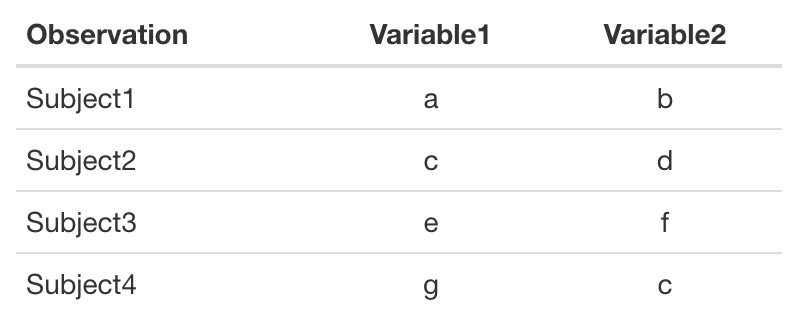
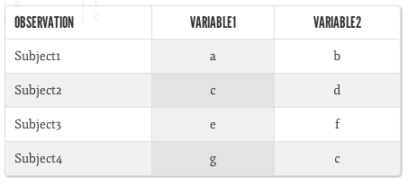
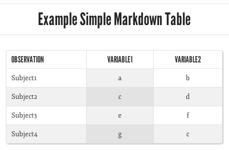
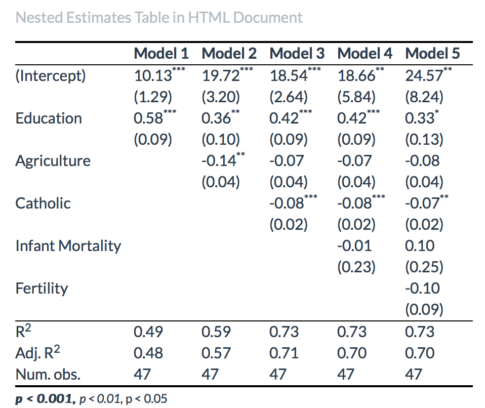

Chapter 9 Showing Results with Tables
Graphs and other visual methods, discussed in the next chapter, can often be more effective ways to present descriptive and inferential statistics than tables.163 Nonetheless, tables of parameter estimates, descriptive statistics, and so on can sometimes be important tools for describing your data and presenting research findings. See Ehrenberg (1977) and Gelman (2011) for information on creating tables for effective communication.
Learning how to dynamically connect statistical results with tables in your presentation documents aids reproducibility and can ultimately save you a lot of time. Manually typing results into tables by hand is tedious, not very reproducible, and can introduce errors.164 It’s especially tedious to retype tables to reflect changes you made to your data and models. Fortunately, you don’t actually need to create tables by hand. There are many ways to have R do the work for you.
The goal of this chapter is for you to learn how to dynamically create
tables for your presentation documents written in LaTeX and Markdown. We
will first learn the simple knitr/R Markdown syntax we need to
dynamically include tables created from R objects. Then we will learn
how to actually create the tables. There are a number of ways to turn R
objects into tables that can be dynamically included in LaTeX or
Markdown/HTML markup. In this chapter we mostly focus on three tools for
creating tables: the kable() function from knitr, the xtable
package, and the texreg package (Leifeld 2024). kable() can create tables
from data frames for both LaTeX and Markdown/HTML documents. xtable
does the same, but is much more customizable. texreg produces
publication-quality tables from objects containing statistical model
results, or model objects. It allows you to combine results from multiple
models into one table. Unfortunately texreg is less flexible with
objects of classes it does not support.165
Warning: Automating table creation removes the possibility of adding errors to the presentation of your analyses by incorrectly copying output, a big potential problem in hand-created tables. However, it is not error-free. You could easily create inaccurate tables with coding errors. So, as always, it is important to ‘eyeball’ the output. Does it make sense? If you select a couple values in the R output, do they match what is in the presentation document’s table? If not, you need to go back to the code and see where things have gone wrong. With that caveat, let’s start making tables.
9.1 Basic knitr Syntax for Tables
The most important knitr/rmarkdown chunk option for showing tables
is results. The results option can have one of four
values:
'hide','asis','markup','hold'.
The value hide clearly hides the results of your code chunk from your
presentation document. hold collects all of the output and prints it
at the end of the chunk. To include tables created from R objects in
your LaTeX or Markdown output you should set results='asis' or
results='markup'. asis is the simplest option as it writes the raw
markup form of the table into the presentation document, not as a
highlighted code chunk, but as markup. It is then compiled as table
markup with the rest of the document. markup uses an output hook to
mark up the results in a predefined way. In this chapter, we will work
with examples using the asis option.
9.2 Table Basics
Before getting into the details of how to create tables from R objects, it is useful to first learn how generic tables are created in LaTeX and Markdown/HTML. If you are not familiar with basic LaTeX or Markdown syntax, you might want to skip ahead to Chapters 11 and 12, respectively, before coming back to learn about making tables in these languages.
9.2.1 Tables in LaTeX
Tables in LaTeX are usually embedded in two environments: the table
and tabular environments. What is a LaTeX environment in general?
A LaTeX environment is a part of the markup where special commands are
executed. A simple environment is the center environment.166
Everything placed in a center environment is, unsurprisingly, centered.
Typing:
creates the following text in the PDF output:
LaTeX environments all follow the same general syntax:
You do not have to indent the contents of an environment. Indentations neither affect how the document is compiled nor show up in the final PDF.167 It is conventional to indent them, however, because it makes the markup easier to read.
In this chapter we will learn about two types of environments you need
for tables in LaTeX. The tabular environment allows you to format the
content of a table. The table environment allows you to format a
table’s location in the text and its caption.
The tabular environment
The tabular environment allows you to create tables in LaTeX. Let’s
work through the basic syntax for a simple table.168
To begin a simple tabular environment type
\begin{tabular}{TABLE_SPEC}. The TABLE_SPEC argument allows you to
specify the number of columns in a table and the alignment of text in
each column. For example, to create a table with three columns, the
first of which is left-justified and the latter two center-justified we
type:
The l argument creates a left-justified column, c creates a centered
one. If we wanted a right-justified column we would use r.169 Finally, we can add a horizontal line between columns by adding a vertical bar
| between the column arguments.170 For example, to place a vertical
line between the first and second columns in our example table, we would
type:
Now let’s enter content into our table. We saw earlier how CSV files
delimit individual columns with commas. In LaTeX’s tabular
environment, columns are delimited with ampersands (&).171 In CSV
tables, new lines are delimited by starting a new line. In LaTeX tables
you use two backslashes (\\).172 Here is a simple example of the first two lines of a table:
It is common to demarcate the row with a table’s column names, the first
row, with horizontal lines. A horizontal line also often visually
demarcates a table’s end. You can add horizontal lines in the tabular
environment with the \hline command.
\begin{tabular}{l | c c}
\hline
Observation & Variable1 & Variable2 \\
\hline \hline
Subject1 & a & b \\
\hlineFinally, we close the tabular environment with \end{tabular}. The
full code (with a few extra rows added) is:
\begin{tabular}{l | c c}
\hline
Observation & Variable1 & Variable2 \\
\hline \hline
Subject1 & a & b \\
Subject2 & c & d \\
Subject3 & e & f \\
Subject4 & g & h \\
\hline
\end{tabular}This produces the following table:
The table float environment
You might notice that the table we created so far lacks a title and is
bunched very closely to the surrounding text. In LaTeX we can create a
table float environment to solve this problem. Float environments
allow us to separate a table from the text, specify its location, and
give it a caption.173 To begin a table float environment, use
\begin{table}[POSITION_SPEC]. The argument allows us to determine the location of the table. It can be set
to h for here, i.e. where the table is written in the text. It can
also be t to place it on the top of a page or b for the bottom of
the page. To set a title for the table, use the \caption command. LaTeX
automatically determines the table’s number, so you only need to enter
the text. You can also declare a cross-reference key for the table with
the \label command.174 A table environment is closed
with \end{table}. Let’s see a full example.
\begin{table}[t]
\caption{Example Simple LaTeX Table}
\label{ExLaTeXTable}
\begin{center}
\begin{tabular}{l | c c}
\hline
Observation & Variable1 & Variable2 \\
\hline \hline
Subject1 & a & b \\
Subject2 & c & d \\
Subject3 & e & f \\
Subject4 & g & h \\
\hline
\end{tabular}
\end{center}
\end{table}Notice that the tabular environment is further nested in the center
environment. This centers the table, while leaving the table’s title
left-justified. The final result is Table ??. One final tip: to have the caption placed at
the bottom rather than the top of the table in the final document,
simply put the caption command after the tabular environment is
closed.
You can see how typing out a table in LaTeX gets very tedious very fast. For all but the simplest tables, it is best to try to have R do the table-making work for you.
9.2.2 Tables in Markdown/HTML
Now we will briefly look at the syntax for creating simple Markdown and HTML tables before turning to learn how to have R create these tables for us.
Markdown tables
Markdown table syntax, as with all Markdown syntax, is generally much simpler than LaTeX’s tabular syntax. The markup is much more human readable. Nonetheless, larger tables can still be tedious to create.
You do not need to declare any new environments to start creating a
Markdown table. Just start typing in the content. Columns are delimited
in Markdown tables with a vertical bar (|). Rows are started with a
new line. To indicate the head of the table, usually the row(s)
containing the column names, separate it from the body of the table with
a row of dashes (e.g. -----). Here is an example based on the table we
created in the previous section:
Note that it is not necessary to line up the vertical bars. You just need to have the same number of them on each row.
You can specify each column’s text justification using colons on the dashed row. For example, this code will create the left-center-center justified formatted table we made earlier:
Observation | Variable1 | Variable2
:---------- | :-------: | :-------:
Subject1 | a | b
Subject2 | c | d
Subject3 | e | f
Subject4 | g | cTo create a left-justified column, use a colon on only the left side of the dashes.
The ultimate look of a Markdown table is highly dependent on the CSS style file you are using (see Chapter 12 for how to change your CSS style file). The default RStudio CSS style as of late 2019 formats our table to look like this:

Using a different CSS style file,175 we can get something like this:

In basic Markdown, you can add a caption with the heading syntax (see
Section 12.1.3). In this example the three hashes (###)
create the header:
### Example Simple Markdown Table
Observation | Variable1 | Variable2
:---------- | :-------: | :-------:
Subject1 | a | bproducing something like this:

HTML tables
The texreg() function that we will learn in the next section doesn’t create tables formatted with Markdown syntax. It can create tables with HTML syntax. This is useful for us because virtually any HTML markup can be incorporated into a Markdown document. In fact, Markdown table syntax
is only a stepping stone for more easily producing tables with HTML
syntax. So it is useful to also understand the basic syntax for HTML
tables.
HTML uses element “tags” to begin and end tables. The main element we
use to create tables is, well, the tables element. This is very
similar to LaTeX’s tabular environment. An HTML element generally
begins with a start tag and ends with an end tag. This is
similar to LaTeX’s \begin{} and \end{} commands. Begin tags are
encapsulated in a greater than and less than sign and include the
element tag name (<TAG>). End tags are similar, but include a forward
slash like this </TAG>. The content of the element goes between the
start and end tags. For example:
As in LaTeX, you are not required to tab the content of a table element; however, it does make the markup document easier to read and, as the number of tags proliferates, easier to write.
You can specify element attributes inside of start tags.176 For
example, to add a border to the table, use: <table border="1">.177
Table rows are put inside of tr (table rows) element tags. Individual
cells are delimited with td (standard cell) tags. Here is what the
first row of our example table looks like in basic HTML:
We can further delimit a table’s header row(s) from its body with the
thead and tbody tags. Finally, before making a full table it’s
useful to mention that table captions can be included with caption
tags. Let’s put this all together:
<table>
<thead>
<tr>
<td>Observation</td> <td>Variable1</td> <td>Variable2</td>
</tr>
</thead>
<tbody>
<tr>
<td>Subject1</td> <td>a</td> <td>b</td>
</tr>
<tr>
<td>Subject2</td> <td>c</td> <td>d</td>
</tr>
<tr>
<td>Subject3</td> <td>e</td> <td>e</td>
</tr>
<tr>
<td>Subject4</td> <td>f</td> <td>f</td>
</tr>
</tbody>
</table>As with Markdown tables, the ultimate appearance of the table is highly dependent on the style files you use.
9.3 Creating Tables from Supported Class R Objects
Just as the write.csv() function turns an R data frame into a CSV formatted text file, there are a number of methods in R to take an
object, e.g. a matrix, data frame, the output from a statistical
analysis, and so on, and turn them into LaTeX and HTML tables. kable(),
xtable, and texreg each work most easily with specific object
classes that their designers explicitly supported.
9.3.1 kable for Markdown and LaTeX
kable() easily converts matrices and data frames into tables for
Markdown, HTML, and LaTeX among others. Let’s create a simple data
frame:
library(knitr)
kable_ex <- data.frame(
Observation = c("Subject1", "Subject2",
"Subject3", "Subject4"),
Variable1 = c("a", "c", "e", "g"),
Variable2 = c("b", "d", "f", "c")
)Then place this data frame into a kable() call:
Beyond setting the table’s caption with caption, there are a few other
alterations that can be made with kable arguments. You can specify new
column and row names by passing character vectors to col.names and
row.names, respectively. These are very useful, as it can be difficult,
or at least irritating, for your readers to try to decode the names you
give to your data frame rows and columns in R. Another useful argument
is digits. This will round numbers in the table to a specified number
of digits after the decimal place. To effectively convey your results,
you should at least only include digits that are significant in
that they meaningfully vary in the data (Ehrenberg 1977, 281).
You can also change the markup language that the table is created in
using the format argument. For example, to create a LaTeX formatted
table, use format = 'latex'. In general, you do not need to specify the
format if you are using knitr or rmarkdown to include the table in a
presentation document. This will be done automatically.
9.3.2 xtable for LaTeX and HTML
While kable() allows you to quickly create simple tables, it can only do
so from matrices and data frames. It also has limited customizability.
The xtable package can create more customizable tables from a wider
variety of R objects, including statistical model objects.
Different R statistical model estimation commands can produce model
objects of different classes. For example, the lm() (linear model) function creates model summaries of the lm class. Let’s create a simple linear regression using the swiss data frame and lm(). This
data frame is included with R by default. The simple linear regression
model we are going to make has the swiss variable Examination as
the dependent variable and Education as the only independent
variable.178
# Fit simple linear regression model
M1 <- lm(Examination ~ Education, data = swiss)
# Return class
class(M1)## [1] "lm"By using the class function, we can see that M1 is of the lm class.
M1 contains items estimated by the linear regression model179 such
as the coefficient estimates and their standard errors. To get a summary
of a model object’s contents, use the summary() function like this:
##
## Call:
## lm(formula = Examination ~ Education, data = swiss)
##
## Residuals:
## Min 1Q Median 3Q Max
## -10.932 -4.763 -0.184 3.891 12.498
##
## Coefficients:
## Estimate Std. Error t value Pr(>|t|)
## (Intercept) 10.1275 1.2859 7.88 5.2e-10 ***
## Education 0.5795 0.0885 6.55 4.8e-08 ***
## ---
## Signif. codes:
## 0 '***' 0.001 '**' 0.01 '*' 0.05 '.' 0.1 ' ' 1
##
## Residual standard error: 5.77 on 45 degrees of freedom
## Multiple R-squared: 0.488, Adjusted R-squared: 0.476
## F-statistic: 42.9 on 1 and 45 DF, p-value: 4.81e-08To find a full list of object classes that xtable supports, type
methods(xtable) into the R Console after you have loaded the package.
xtable for LaTeX
Let’s look at how to create LaTeX tables with xtable by creating a table summarizing the estimates from the M1 model object.
<<results=asis, echo=FALSE>>=
library(xtable)
# Create LaTeX table from M1 and show the output markup
xtable(M1,
caption = "Linear Regression, DV: Exam Score",
label = "BasicXtableSummary",
digits = 1)
@When included in an R Sweave-style LaTeX document, this code will create a table exactly like Table ??.
Let’s go through this code, working from the outside in. First you’ll
notice that we’ve set two knitr code chunk options. As we discussed
earlier, results='asis' allows us to include the LaTeX formatted table
created by xtable. The next option echo=FALSE hides the code from being shown in our final document. The xtable() function creates the
summary table of our M1 model object. Not only does it produce both
complete tabular and table environments, but also through the
caption and label arguments it automatically adds in the table’s
title and cross-reference label, respectively. Finally, notice that I
added the digits = 1 argument. As in kable(), this specifies that I
want numbers in the table to be rounded to one decimal digit.
The caption is printed below the table by default.
xtable for Markdown/HTML
We can use xtable and the print.xtable() function180 to also create tables for Markdown and HTML documents. The xtable function produces,
unsurprisingly, xtable() class objects. We can run these through the
print() function and add arguments to customize how the table is
formatted. By default, print.xtable()’s type argument is set to
"latex". To create an HTML table that can be inserted into Markdown
and HTML documents, set the type argument from "latex" to "html".
For example, to create an HTML version of the table summarizing M1 and
include it in an R Markdown document, type:
```{r results='asis', echo=FALSE}
library(xtable)
# Create an xtable object from M1
m1_table <- xtable(M1,
caption = "Linear Regression, DV: Exam Score",
label = "BasicXtableSummary",
digits = 1)
# Create HTML summary table of m1_table
print.xtable(m1_table, type = "html", caption.placement = "top")
```If you intend to include multiple tables in your R Markdown document, you
will want to set all of the tables to be printed in HTML. You can place
options("xtable.type" = "html") in a code chunk near the beginning of
your document.181 This makes it so that you don’t need to
include type = "html" every time you use print.
Notice in the previous code example that we also added the
caption.placement = "top" argument. This will move the caption from
the bottom of the table, as it is in Table ??, to the top. See the xtable package
documentation182 for the full list of print.xtable() options.
9.3.3 texreg for LaTeX and HTML
kable() and xtable are limited when it comes to creating tables from
statistical model objects. kable only works with matrices and data
frames. xtable is easiest when working with only one model object at a
time. Furthermore, by default these tools do not create output tables
that present estimates from multiple statistical models in the style
used by many prominent academic journals. The texreg package is very
useful for creating these types of tables. It also supports more model
object types than xtable.
texreg for LaTeX
Imagine we want to show the estimates from a number of nested regression models in LaTeX as the next table. For example, to estimate nested regression models from the remaining variables in the swiss data set, we type:
# Estimate nested regression models
M2 <- lm(Examination ~ Education + Agriculture, data = swiss)
M3 <- lm(Examination ~ Education + Agriculture + Catholic,
data = swiss)
M4 <- lm(Examination ~ Education + Agriculture + Catholic +
Infant.Mortality, data = swiss)
M5 <- lm(Examination ~ Education + Agriculture + Catholic +
Infant.Mortality + Fertility, data = swiss)We can now include these model objects in one LaTeX table with texreg.
Remember to include results='asis' in the code chunk head.
library(texreg)
# Create custom coefficient names
cust_coef <- c('(Intercept)', 'Education', 'Agriculture',
'Catholic', 'Infant Mortality', 'Fertility')
# Create nested regression model table
texreg(list(M1, M2, M3, M4, M5),
caption = 'Nested Estimates Table with \\emph{texreg}',
caption.above = TRUE,
label = 'Basic_texregTable',
custom.coef.names = cust_coef)Notice that we placed the model objects in a list when we called
texreg(). texreg() automatically created the table and tabular
environments and by default centers the table.183 We added a caption
and reference label with the caption and label arguments,
respectively. By default, the caption is placed below the table, so we
used caption.above = TRUE to place it on top. Finally, we created
custom coefficient names with custom.coef.names that are a bit tidier
than the variable names in our R data set. Your readers will appreciate
easily discernible coefficient names.
In the LaTeX caption, you’ll notice \\emph{texreg}. In LaTeX the emph
command italicizes text (we’ll see this again in Chapter 11). We added an additional escape character \
so that R would not try to interpret the e and instead feed it to
LaTeX. By default, texreg() uses stars = c(0.001, 0.01, 0.05) to
determine at what p-values to display statistical significance stars.
This is the same as the lm model summary default showing three sets of
statistical significance stars. You can define the significance levels
by assigning a different numeric vector to the stars argument.
There are many other changes you can make to tables created with
texreg. You can change the column and coefficient names, determine
what type of standard errors to show, and so on. For the full list of
arguments, see the help file by typing ?texreg into your R Console.
texreg for HTML
You can also use the texreg package to create tables in Markdown/HTML
documents. Instead of the texreg function, use htmlreg. The syntax
is largely similar, though arguments relating to LaTeX are not
available, while others relating the HTML are. Here is a simple example:
htmlreg(list(M1, M2, M3, M4, M5),
caption = 'Nested Estimates Table in HTML Document',
caption.above = TRUE, custom.coef.names = cust_coef)Notice that we did not include the label argument as this is not
available in HTML. The resulting table looks like this:

9.3.4 Fitting large tables in LaTeX
Sometimes you may have large tables that are difficult to fit onto a page in LaTeX. There are a number of ways to adjust tables so that they fit on the page.
LaTeX landscape tables
If your LaTeX table is very wide, e.g. because it shows results from
many estimation models, you can use LaTeX’s lscape package to create
landscape formatting environments. Rather than orienting the text of a page so that it is in profile (a long page), a landscape environment turns it 90 degrees so that it has a landscape orientation (a wide
page).
To use the lscape package, first place \usepackage{lscape} in your
LaTeX document’s preamble. Then begin a landscape environment with
\begin{landscape} where you would like it located in the text. Then
place the table environment information and knitr code for creating
the table. Finally, close the landscape environment with
\end{landscape}.
LaTeX scalebox for tables
In addition, the scalebox command from the graphics package could be
useful for fitting large tables onto a PDF page. This command expands or
shrinks the text in the table. texreg actually has a scalebox
argument. If you use scalebox = 0.5, it will halve the size of the
table; scalebox = 2 doubles it.
More generally, to rescale a table use:
\scalebox{HORIZONTAL_SCALE}[VERTICAL_SCALE]{TABLE}
HORIZONTAL_SCALE is how much to scale the table horizontally.
VERTICAL_SCALE is how much to scale vertically and TABLE is the
table or R code chunk to create the table.
9.3.5 xtable with non-supported class objects
The kable, texreg, and xtable packages are very convenient for
model objects they know how to handle. With supported class objects, the
functions in these packages know where to look for the vectors
containing the things—coefficient names, standard errors, and so
on—that they need to create tables. With unsupported classes, however,
they don’t know where to look for these things. Luckily, there is a work-around.
You tell xtable() where to find elements you want to include in
your table. xtable() can handle matrix and data frame class objects. The
rows of these objects become the table rows and the columns become the table
columns. So, to create tables with non-supported class objects you need
to:
find and extract the information from the unsupported class object that you want in the table,
convert this information into a matrix or data frame where the rows and columns of the object correspond to the rows and columns of the table that you want to create,
use xtable with this object to create the table.
Imagine that you want to create a results table showing the covariate names, coefficient means, and quantiles for marginal posterior distributions estimated from an linear regression using the brms package (Bürkner 2023) and data from the swiss data frame. Let’s fit the model:
library(brms)
# Fit model
linear_brms <- brm(Examination ~ Education,
data = swiss,
family = gaussian(link = "identity"),
refresh = 0)
# Find linear_brms's class
class(linear_brms)## [1] "brmsfit"Note: I included refresh = 0 to suppress output about the model fitting process.
Using the class() function, we see that the model output object in
linear_brms is of the brmsfit class. This class is not supported by
xtable. If you try to create a table summarizing the estimates in
linear_brms_table, you will return an error telling you the object’s class
is not supported.
With unsupported class objects, you have to create the summary yourself and extract the elements that you want from it manually. A good knowledge of vectors, matrices, and component selection is very handy for this (see Chapter 3).
First, create a summary of your output object linear_brms:
This creates a new object of the class brmssummary. We’re still not
there yet as this object contains not just the covariate names and so on,
but also information we don’t want to include in the results table, like
the estimation formula. The second step is to extract a matrix from
inside linear_brms_summary called summary with the component
selector ($). Remember that to find the components of an object, use
the names() function.
## [1] "formula" "data_name" "group" "nobs"
## [5] "ngrps" "autocor" "prior" "algorithm"
## [9] "chains" "iter" "warmup" "thin"
## [13] "sampler" "fixed" "spec_pars" "cor_pars"The fixed matrix is where the things we want in our table are located. I find it easier to work with data frames, so let’s also convert the matrix into a data frame.
Here is what the model summary data frame looks like:
## Estimate Est.Error l.95..CI u.95..CI Rhat
## Intercept 10.1066 1.32803 7.5399 12.7133 1.002
## Education 0.5805 0.09277 0.3996 0.7663 1.000
## Bulk_ESS Tail_ESS
## Intercept 3542 2776
## Education 3575 2308Now we have a data frame object xtable can handle. After a little cleaning up (see the chapter’s Appendix for more details) you can use xtable as before to create Table ??.
It may take some hunting to find what you want, but a similar process can be used to create tables from objects of virtually any class.184 Hunting for what you want can be easier if you look inside of objects by clicking on them in RStudio’s Environment tab.
9.3.6 Creating variable description documents with xtable
You can use xtable to create a table describing variables in your data
set and insert these into Markdown documents created with the
concatenate and print (cat) command (see Section ??). This is
useful because our data so far has been stored in plain-text files.
Unlike binary Stata or SAS data files, plain-text data files do not
include variable descriptions.
Imagine that we want to create a Markdown file with a table describing the variables from the swiss data frame. First we will create two vectors: one for the variable names and the other for the variable descriptions.
# Create variable vector from column names
Variable <- names(swiss)
# Create variable description vector
Description <- c("common standardized fertility measures",
"% of males involved in agriculture as occupation",
"% draftees receiving highest mark on army examination",
"% education beyond primary school for draftees",
"% catholic",
"% live births who live less-than 1 year"
)In the first line we use the names() function to create a vector of the
swiss data frame’s column names. Then we create a vector of
descriptions with the combine function (c()). Now we can combine these vectors into a matrix and use it to create an HTML table.
# Combine Variable and Description variables into a matrix
descriptions_bound <- cbind(Variable, Description)
# Create an xtable object from descriptions_bound
descriptions_table <- xtable(descriptions_bound)
# Format table in HTML
descript_table <- print.xtable(descriptions_table, type = "html")Finally, we can use cat() to create our Markdown variable description file.
# Create variable description file
cat("# Swiss Data Variable Descriptions \n",
"### Source: Mosteller and Tukey, (1977) \n",
descript_table,
file = "swiss-variable-descriptions.md"
)The first part of the cat() function here is the title of the document. As we will see in Chapter
12, hashes (#) create headers. \n
creates a new line in the Markdown document. The next line is
information on the swiss data frame’s source. We then include the HTML
table in the descript_table object and save it to a file called
swiss-variable-descriptions.md.
It is convenient to include the creation of this table in your data gathering makefiles and have it saved into the same directory as your data. This way it will be easy to update as you update your data and easy to find. If you are storing your data on GitHub, it will automatically render the variable description Markdown file and make it easy for others to read. See this book’s makefile example for more information: https://bit.ly/2UtvOys.185
Appendix
Source code for cleaning linear_brms_summary_df and using it to create a LaTeX table:
library(dplyr)
library(xtable)
# Change posterior summary variable names
linear_brms_summary_df <- rename(linear_brms_summary_df,
`2.5%` = `l.95..CI`)
linear_brms_summary_df <- rename(linear_brms_summary_df,
`50%` = Estimate)
linear_brms_summary_df <- rename(linear_brms_summary_df,
`97.5%` = `u.95..CI`)
# Reorder variables and remove the Est. Error
linear_brms_summary_df <- linear_brms_summary_df[,
c("2.5%", "50%", "97.5%")]
# Create table
xtable(linear_brms_summary_df,
caption = "Coefficient Estimates Predicting
Examination Scores in Swiss Cantons (1888)
Found Using Bayesian Linear Regression",
label = "CoefEstTable")
# Create table
xtable(linear_brms_summary_df,
caption = "Coefficient Estimates Predicting
Examination Scores in Swiss Cantons (1888)
Found Using Bayesian Normal Linear Regression")Note that the new variable names are in quotation marks, in contrast to the example from Chapter 7. The quotation marks allow us to specify a name that begins with a number and has special characters like the percent sign.
References
This is especially true of the small-print, high-density coefficient estimate tables that are sometimes descriptively called ‘train schedule’ tables.↩︎
For example, in a replication of Reinhart and Rogoff’s (2010) much cited study of economic growth and public debt, Herndon, Ash, and Pollin (2014) found a number of apparent transcription errors. Analysis results in the original spreadsheets appear to not have been entered into the paper’s tables accurately.↩︎
These are not the only packages available in R for creating presentation document tables from R objects. I personally really like the stargazer package (Hlavac 2022). It has a similar syntax to texreg and is particularly good for showing results from multiple models estimated using different model types in one table.↩︎
For a comprehensive list of LaTeX environments, see https://latex.wikia.org/wiki/List_of_LaTeX_environments.↩︎
An aside: the
tabbingenvironment is a useful way to create tabbed text in LaTeX. We don’t cover this here though.↩︎For a comprehensive overview, see the LaTeX Wiki page on tables: https://en.wikibooks.org/wiki/LaTeX/Tables.↩︎
You can also specify a column’s width by using
m{WIDTH}instead. Be sure to load the array package in the preamble for this to work. Usingmwill create a column of a specified width that is vertically justified in the middle. For example,m{3cm}would create a column with a width of 3 centimeters. Text in the column would automatically be wrapped onto multiple lines if need be. You can replace themwith eitherporb.pvertically aligns the text at the top,baligns it at the bottom.↩︎If you add two vertical bars (
||), you will get two lines.↩︎If you want to include an ampersand in the text of your LaTeX document, you need to escape it like this:
\&.↩︎You can use two backslashes outside of the
tabularenvironment as well to force a new line. Also, to increase the space between the line, you can add a vertical width argument to the double backslashes. For example,\[3cm]will give you a 3-centimeter gap between the current line and the next one.↩︎We will see in the next chapter how to use
figurefloats as well.↩︎This command works throughout LaTeX. To reference the table type in the text of your document
\ref{KEY}, whereKEYis what you set with the\labelcommand. Use\pagerefto reference the page number.↩︎The table was created using the Upstanding Citizen style from the program Marked.↩︎
These work like arguments in R in that they change how the element is evaluated.↩︎
Whether or not a border appears is determined by whether or not the style sheet you are using includes borders.↩︎
For a description of these variables, type
?swissinto the console.↩︎If you are unfamiliar with the syntax of R statistical estimation models, the previous code might be confusing. In general ‘response’ (\(Y\)) variables are written first and are separated from the ‘explanatory’ (\(X\)) variables by a tilde (
\sim). Crawley (2005, 107) notes that you can read \(Y \sim X\) as ‘\(Y\) is modeled as a function of \(X\)’. In later examples we will see that individual explanatory variables are generally separated by plus signs (+), indicating that they are included in the model, not that they are added. For more information, see Crawley (2005 Ch. 7).↩︎Note: you can abbreviate
print.xtable()asprint().↩︎Of course, you will probably want to use the
include=FALSEknitr option with this code chunk.↩︎Use the
center = FALSEargument to override centering. If you would like to only create thetabularenvironment, use the argumenttable = FALSE. Creating your owntableenvironment can be useful in situations where you want more customizability.↩︎This process can also be useful for creating graphics as we will see in Chapter 10.↩︎
The long URL is: https://github.com/christophergandrud/rep-res-book-v3-examples/tree/master/data.↩︎